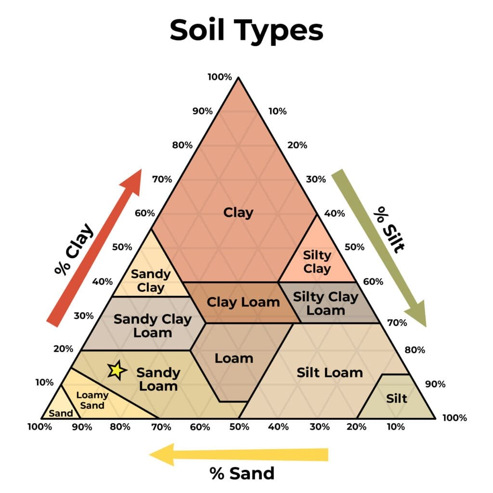
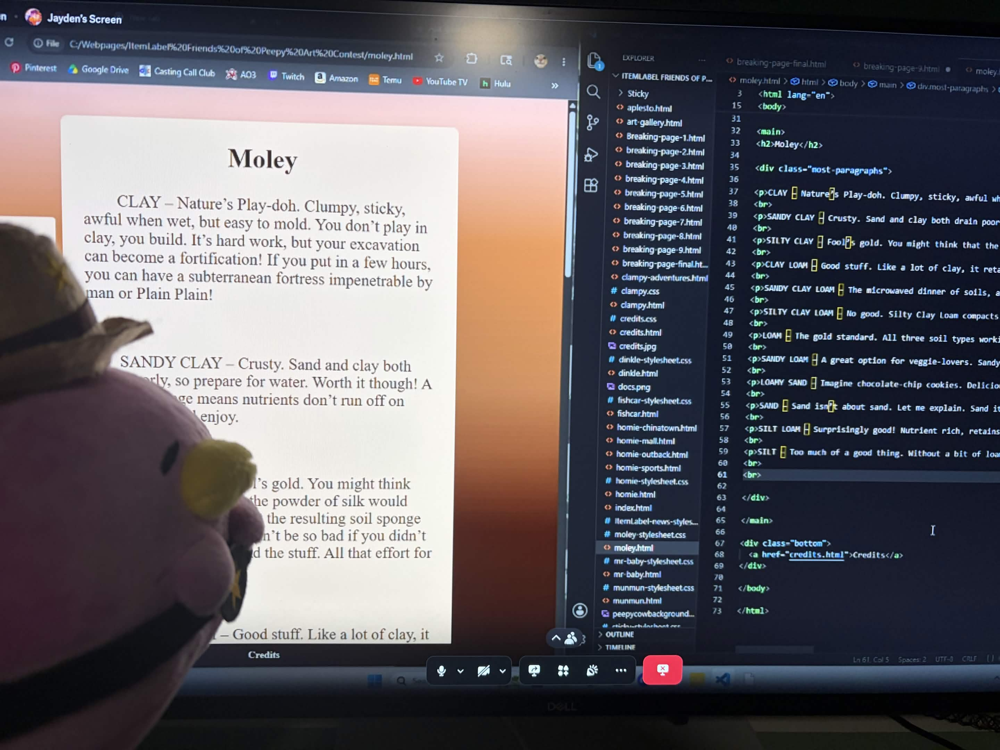

Moley

CLAY – Nature’s Play-doh. Clumpy, sticky, awful when wet, but easy to mold. You don’t play in clay, you build. It’s hard work, but your excavation can become a fortification! If you put in a few hours, you can have a subterranean fortress impenetrable by man or Plain Plain!
SANDY CLAY – Crusty. Sand and clay both drain poorly, so prepare for water. Worth it though! A lack of drainage means nutrients don’t run off on you. Irrigate and enjoy.
SILTY CLAY – Fool’s gold. You might think that the glue of clay and the powder of silk would balance each other out, but the resulting soil sponge is just okayish. This wouldn’t be so bad if you didn’t have to dig so deep to find the stuff. All that effort for mediocrity? Next.
CLAY LOAM – Good stuff. Like a lot of clay, it retains water a little too well at times, but that’s it. That’s the list of downsides. Nutrient rich like loam with a more malleable structure! If you’re not a sand guy, this is the place to be.
SANDY CLAY LOAM – The microwaved dinner of soils, and I say that with love. SCL isn’t as fertile as some other blends of soil, but it retains nutrients like a champ. If you’re a lazy guy (no judgement) who wants the dirt to do most of the work, welcome to easy street.
SILTY CLAY LOAM – No good. Silty Clay Loam compacts. Someone steps on it, heavy rains come down, a tree falls, soil goes squish. It’s like making your home under a giant sponge. I guess if you’re willing to deal with that, it’s got your nutrients and a good feel, but why would you want to? You deserve better.
LOAM – The gold standard. All three soil types working in harmony. Texture like a cake, good drainage, not too hard or soft, often covered with plants. If you find loam in a yard without an annoying dog, you stay there.
SANDY LOAM – A great option for veggie-lovers. Sandy loam is like softer loam, so stuff with big roots go here. It doesn’t retain water as well, so you might have to shell out for a sprinkler system, but you’ll make it back selling some pumpkins. Prospective farmers look no further.
LOAMY SAND – Imagine chocolate-chip cookies. Delicious. Now imagine cookie-chip chocolates. You would say 'what sick mind devised this'. That sick mind? God. And whatever he was cooking with loamy sand, he should have left in the kitchen. Too much sand, too little loam, end of. Real dirt lovers know what I’m saying.
SAND – Sand isn’t about sand. Let me explain. Sand itself is a big pile of nothing. It’s why cats poop in it. It’s why they give it to kids. Nothing grows in sand, so you can’t make it any worse. But sand follows the most important rule of real estate: location! Sand pads out the best beaches and allows fun in the sun.
SILT LOAM – Surprisingly good! Nutrient rich, retains water, this is actually a great place to be! The downside is compaction. Silt brings growth at the cost of structure. But at this specific mixture, you can work with it! Reinforce, prep for erosion, your elbow grease will pay off with a bountiful home!
SILT – Too much of a good thing. Without a bit of loam for structure, silt is powder. It erodes, it compacts, it’s like trying to build a house out of clouds and whimsy. Avoid, avoid, avoid.
